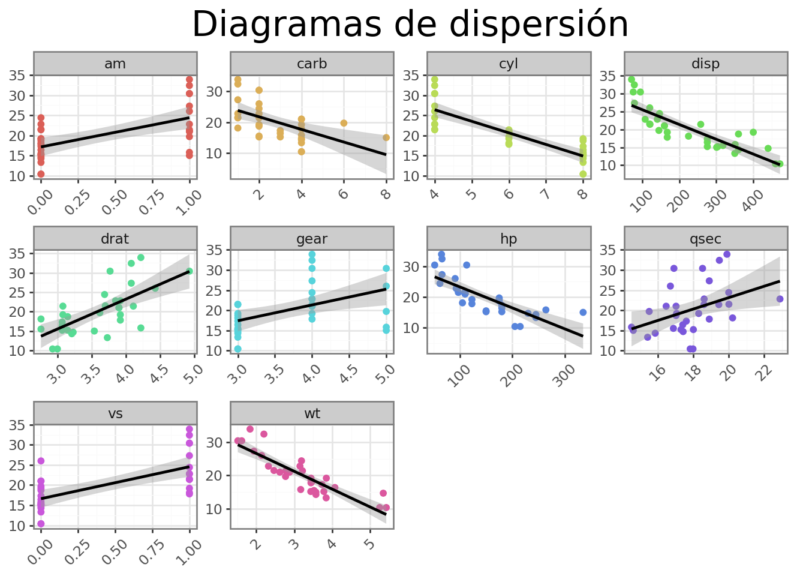
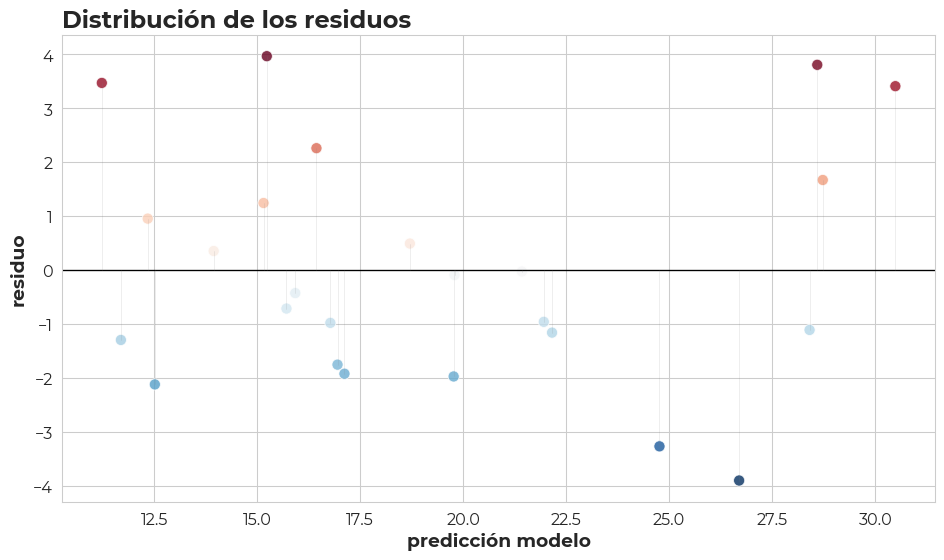

#conda install -c conda-forge numpy
#conda install -c conda-forge pandas
#conda install -c conda-forge scikit-learn
import re
import rpy2
import pandas as pd
from pathlib import Path
import seaborn as sns
import os # Necesario para la función os.makedirsOrdinary Least Squares Regression (OLSR)
Apuntes y anotaciones personales
Este material es reproducible en código Python utilizando Quarto
La Regresión por Mínimos Cuadrados Ordinarios (Ordinary Least Squares Regression, OLSR u OLS) representa una metodología estadística esencial que permite analizar la correlación entre una variable dependiente (también conocida como variable de respuesta) y una o más variables independientes (o predictoras). Este método constituye una herramienta fundamental en el campo del análisis de regresión lineal.

Librerías que se usaron en el documento
| Criterio | Aplica | Detalles | |
|---|---|---|---|
| 0 | üîç Tipo de modelo | Supervisado | Se entrena con datos X → y |
| 1 | üéØ Variable respuesta | Num√©rica continua | Ej. mpg, precio, ingresos |
| 2 | üî¢ Variables predictoras | Num√©ricas y/o categ√≥ricas | Categor√≠as convertidas a dummies |
| 3 | üìà Relaci√≥n entre variables | Lineal (supuesto clave) | Se asume una relaci√≥n lineal entre X e Y |
| 4 | üß™ Normalidad de residuos | Deseable | Importante para intervalos de confianza válidos |
| 5 | üîÅ Independencia de errores | Necesaria | Errores deben ser independientes |
| 6 | ⚖️ Homoscedasticidad | Necesaria | Varianza de errores debe ser constante |
| 7 | ❗ Sensible a outliers | Sí | Outliers pueden influir mucho en el modelo |
| 8 | üîó Multicolinealidad entre predictores | Problema común | Usar VIF para detectar problemas |
| 9 | ü߆ Interpretabilidad | Alta | Modelo fácil de explicar |
| 10 | üöÄ Velocidad y eficiencia | Muy alta | Rápido incluso con datos grandes |
| 11 | üß™ Validaci√≥n cruzada | Compatible | Ayuda a prevenir overfitting |
| 12 | ❌ No funciona bien si... | Relaciones no lineales, outliers severos, colinealidad | Evitar si no hay linealidad o hay muchos outliers |
Objetivo
La Regresión por Mínimos Cuadrados Ordinarios (OLSR) busca la línea que mejor se ajusta a los datos. Para lograrlo, reduce al mínimo la suma de los cuadrados de las diferencias entre los valores reales y los valores que predice el modelo. Estas diferencias son los residuos o errores. Al trabajar con los cuadrados de los errores, este método evita que los errores positivos y negativos se anulen entre sí, y da más peso a los errores grandes durante el proceso de minimización.
Metodología
La metodología de OLSR se basa en los siguientes pasos y principios:
Modelo Lineal: OLSR asume una relación lineal entre las variables. Para una regresión lineal simple (una variable independiente), la ecuación es:
\[Y = \beta_0 + \beta_1X + \epsilon\]Donde:
- \(Y\) es la variable dependiente.
- \(X\) es la variable independiente.
- \(\beta_0\) es el intercepto (el valor de \(Y\) cuando \(X\) es 0).
- \(\beta_1\) es la pendiente (el cambio en \(Y\) por cada unidad de cambio en \(X\)).
- \(\epsilon\) es el término de error o residual, que representa la parte de \(Y\) que no puede ser explicada por \(X\).
Para una regresión lineal múltiple (varias variables independientes), la ecuación se expande a:
\[Y = \beta_0 + \beta_1X_1 + \beta_2X_2 + ... + \beta_kX_k + \epsilon\]
- Minimización de la Suma de Cuadrados de Residuos (SSR): El corazón de OLS es encontrar los valores de los coeficientes (\(\beta_0, \beta_1\), etc.) que minimicen la siguiente función:
\[\text{Minimizar } \sum_{i=1}^{n} (y_i - \hat{y}_i)^2\]
Donde:- \(y_i\) es el valor observado de la variable dependiente para la observación \(i\).
- \(\hat{y}_i\) es el valor predicho de la variable dependiente por el modelo para la observación \(i\).
- \((y_i - \hat{y}_i)\) es el residual para la observación \(i\).
Para lograr esta minimización, se utilizan técnicas de cálculo (derivadas parciales) para encontrar los valores de los coeficientes que hacen que la pendiente de la función de suma de cuadrados sea cero.
Estimación de Coeficientes: Los valores estimados de los coeficientes, denotados como \(\hat{\beta}_0, \hat{\beta}_1\), etc., son aquellos que resultan de la minimización. Estos coeficientes son los que definen la “línea de mejor ajuste”.
Supuestos del OLS: Para que los estimadores de OLS sean los “mejores estimadores lineales insesgados” (según el Teorema de Gauss-Markov), se deben cumplir ciertas suposiciones:
Linealidad: La relación entre las variables es lineal.
Independencia de los errores: Los errores de una observación no están correlacionados con los errores de otra.
Homocedasticidad: La varianza de los errores es constante en todos los niveles de las variables independientes.
Normalidad de los errores: Los errores se distribuyen normalmente (aunque no es estrictamente necesario para la estimación, sí lo es para la inferencia estadística).
No multicolinealidad perfecta: Las variables independientes no están perfectamente correlacionadas entre sí.
Pasos generales del Machine Learning supervisado
- Importar y explorar los datos
- Preprocesamiento
- División de los datos (train/test)
- Entrenamiento del modelo
- Evaluación del modelo
- Ajustes o validación cruzada (si aplica)
- Predicción con nuevos datos
- Interpretación de resultados
Base de datos
La base de datos mtcars es un conjunto de datos clásico en R que contiene información sobre 32 automóviles (modelos de 1973–74), y fue extraído de la revista Motor Trend US. Incluye variables técnicas del desempeño de los autos.
Aquí está una descripción de cada columna:
| Variable | Significado | Tipo de dato |
|---|---|---|
mpg |
Miles per gallon (millas por galón) | Numérica |
cyl |
Número de cilindros | Entero |
disp |
Desplazamiento del motor (en pulgadas cúbicas) | Numérica |
hp |
Caballos de fuerza | Entero |
drat |
Relación del eje trasero (rear axle ratio) | Numérica |
wt |
Peso del auto (en miles de libras) | Numérica |
qsec |
Tiempo en 1/4 de milla (segundos) | Numérica |
vs |
Tipo de motor: 0 = V-shaped, 1 = straight (en línea) | Binaria (factor) |
am |
Tipo de transmisión: 0 = automática, 1 = manual | Binaria (factor) |
gear |
Número de velocidades (marchas) adelante | Entero |
carb |
Número de carburadores | Entero |
require(reticulate)
reticulate::repl_python() #can be used to interactively run Python code
# 2. Cargar y se exploran los datos
data("mtcars")#pip install openpyxl
import pandas as pd
from pathlib import Path
import os # Necesario para la función os.makedirs
# Cargar la base de datos mtcars directamente desde el entorno de R
# r.mtcars accede al objeto 'mtcars' que R ha puesto a disposición
# Reticulate automáticamente lo convierte a un DataFrame de Pandas.
mtcars_df = r.mtcars
## Se guarda la base de datos en un archivo Excel
file = Path.cwd().parent.parent / "Data"
mtcars_df.to_excel(file /"mtcars_data.xlsx", index=True)mtcars_df = pd.read_excel(Path.cwd().parent.parent / "Data" / "mtcars_data.xlsx")| Unnamed: 0 | mpg | cyl | disp | hp | drat | wt | qsec | vs | am | gear | carb | |
|---|---|---|---|---|---|---|---|---|---|---|---|---|
| 0 | Mazda RX4 | 21.0 | 6 | 160.0 | 110 | 3.90 | 2.620 | 16.46 | 0 | 1 | 4 | 4 |
| 1 | Mazda RX4 Wag | 21.0 | 6 | 160.0 | 110 | 3.90 | 2.875 | 17.02 | 0 | 1 | 4 | 4 |
| 2 | Datsun 710 | 22.8 | 4 | 108.0 | 93 | 3.85 | 2.320 | 18.61 | 1 | 1 | 4 | 1 |
| 3 | Hornet 4 Drive | 21.4 | 6 | 258.0 | 110 | 3.08 | 3.215 | 19.44 | 1 | 0 | 3 | 1 |
| 4 | Hornet Sportabout | 18.7 | 8 | 360.0 | 175 | 3.15 | 3.440 | 17.02 | 0 | 0 | 3 | 2 |
| 5 | Valiant | 18.1 | 6 | 225.0 | 105 | 2.76 | 3.460 | 20.22 | 1 | 0 | 3 | 1 |
| 6 | Duster 360 | 14.3 | 8 | 360.0 | 245 | 3.21 | 3.570 | 15.84 | 0 | 0 | 3 | 4 |
| 7 | Merc 240D | 24.4 | 4 | 146.7 | 62 | 3.69 | 3.190 | 20.00 | 1 | 0 | 4 | 2 |
| 8 | Merc 230 | 22.8 | 4 | 140.8 | 95 | 3.92 | 3.150 | 22.90 | 1 | 0 | 4 | 2 |
| 9 | Merc 280 | 19.2 | 6 | 167.6 | 123 | 3.92 | 3.440 | 18.30 | 1 | 0 | 4 | 4 |
Convertir todas las columnas a tipo numérico
# --- IMPORTANTE: Convertir todas las columnas a tipo numérico ---
# Esto es crucial para evitar el TypeError
# 'errors='coerce'' convertirá cualquier valor no numérico a NaN
# y luego se pueden manejar los NaNs (por ejemplo, rellenar o eliminar)
mtcars_df = mtcars_df.apply(pd.to_numeric, errors='coerce')Entrenamiento de los datos (train/test)
La división de datos en conjuntos de entrenamiento (train) y prueba (test) es una práctica fundamental en el aprendizaje automático y la modelización predictiva. Su importancia radica en la necesidad de obtener una evaluación realista y no sesgada del rendimiento de un modelo, y de asegurar que el modelo sea capaz de generalizar a datos nuevos y no vistos.
- En Python,
train_test_split()devuelve directamente los cuatro conjuntos de datos:X_train: Predictoras para entrenamiento.
X_test: Predictoras para prueba.y_train: Variable objetivo para entrenamiento.y_test: Variable objetivo para prueba.
import pandas as pd
from sklearn.model_selection import train_test_split
import numpy as np # Necesario si necesitas setear una semilla para numpy/pandas
# Definir la variable objetivo (dependiente)
target_variable = 'mpg'
# X contendrá todas las variables predictoras (features)
# Y contendrá la variable objetivo
X = mtcars_df.drop(columns=[target_variable])
y = mtcars_df[target_variable]
# 3. Dividir los datos en entrenamiento y prueba
# random_state es el equivalente a set.seed() para reproducibilidad
# test_size=0.2 significa que el 20% de los datos irán al conjunto de prueba (80% para entrenamiento)
# Esto es importante para asegurar que las proporciones de 'mpg' sean similares en ambos conjuntos,
# especialmente útil para variables categóricas o si la distribución de 'mpg' es importante.
X_train, X_test, y_train, y_test = train_test_split(
X, y, test_size=0.2, random_state=123
)
print(f"Tamaño del conjunto de entrenamiento (X_train): {X_train.shape}")
print(f"Tamaño del conjunto de prueba (X_test): {X_test.shape}")
print(f"Tamaño del conjunto de entrenamiento (y_train): {y_train.shape}")
print(f"Tamaño del conjunto de prueba (y_test): {y_test.shape}")Tamaño del conjunto de entrenamiento (X_train): (25, 11)
Tamaño del conjunto de prueba (X_test): (7, 11)
Tamaño del conjunto de entrenamiento (y_train): (25,)
Tamaño del conjunto de prueba (y_test): (7,)- Particionar los datos, evita el overfitting (cuando el modelo memoriza los datos de entrenamiento).
- Permite una evaluación honesta del modelo al probarlo en datos que no vio durante el entrenamiento.
- Es una práctica estándar en cualquier pipeline de aprendizaje automático.
Entrenamiento del modelo
El entrenamiento de un modelo es el paso más importante en el aprendizaje automático. Usando un conjunto de datos de entrenamiento (train_data), el modelo aprende a reconocer patrones para hacer predicciones confiables con datos nuevos. Este proceso es esencial por estas razones:
- Durante el entrenamiento, el modelo identifica patrones específicos en los datos.
- Separamos los datos en grupos de entrenamiento y prueba para asegurar que el modelo funcione bien no solo con datos conocidos, sino también con datos nuevos y no vistos.
- Después del entrenamiento con
train_data, usamos el conjunto de prueba (test_data) para medir el rendimiento. Las métricas (MAE, RMSE, \(R^2\)) nos muestran qué tan bien el modelo maneja datos nuevos. - Un rendimiento peor en
test_dataque entrain_dataindica que el modelo está sobreajustado. - Con estos resultados, podemos decidir si el modelo está listo para usar o necesita ajustes.
Función de entrenamiento
modelo_ols_py = smf.ols(formula=formula, data=train_data_combined).fit():smf.ols(): Es la función para ajustar un modelo de Mínimos Cuadrados Ordinarios (Ordinary Least Squares - OLS).formula=formula: Le pasamos la cadena de fórmula que definimos.data=train_data_combined: Le indicamos de qué DataFrame debe tomar las variables..fit(): Este método entrena el modelo sobre los datos.
import pandas as pd
import statsmodels.formula.api as smf # Para la sintaxis tipo R de fórmulas
# Asumiendo que X_train, X_test, y_train, y_test ya están definidos
# por el chunk de división de datos anterior.
# Para asegurar que X_train y y_train se combinen correctamente para statsmodels
# statsmodels prefiere un solo DataFrame que contenga todas las variables
# Esto es similar a cómo `lm` en R usa `data = train_data`
# Combinar X_train y y_train en un solo DataFrame para statsmodels
train_data_combined = pd.concat([X_train, y_train], axis=1)
# Definir la fórmula del modelo (similar a R)
# mpg ~ . significa "mpg en función de todas las demás variables en el DataFrame"
# Para statsmodels, es mejor listar explícitamente las columnas si X_train tiene muchas
# O si quieres un subconjunto específico, lo especificas aquí.
# Aquí construimos la fórmula dinámicamente para incluir todas las variables de X_train
formula = f"{y_train.name} ~ " + " + ".join(X_train.columns)
# 4. Entrenar el modelo de regresión lineal (OLS)
# statsmodels.formula.api permite usar la sintaxis de fórmula similar a R
modelo_ols_py = smf.ols(formula = formula, data = train_data_combined).fit()
# Revisar resumen del modelo (similar a summary() en R)
print("Resumen del Modelo OLS en Python:")
print(modelo_ols_py.summary()) # .as_html() para una salida bonita en QuartoResumen del Modelo OLS en Python:
OLS Regression Results
==============================================================================
Dep. Variable: mpg R-squared: 0.896
Model: OLS Adj. R-squared: 0.821
Method: Least Squares F-statistic: 12.00
Date: Thu, 19 Jun 2025 Prob (F-statistic): 3.06e-05
Time: 15:17:58 Log-Likelihood: -52.439
No. Observations: 25 AIC: 126.9
Df Residuals: 14 BIC: 140.3
Df Model: 10
Covariance Type: nonrobust
==============================================================================
coef std err t P>|t| [0.025 0.975]
------------------------------------------------------------------------------
Intercept -19.2700 31.016 -0.621 0.544 -85.792 47.252
cyl 1.0972 1.593 0.689 0.502 -2.319 4.513
disp 0.0062 0.020 0.307 0.764 -0.037 0.049
hp -0.0053 0.025 -0.212 0.835 -0.059 0.048
drat 1.8203 2.101 0.866 0.401 -2.687 6.327
wt -3.6682 2.289 -1.603 0.131 -8.577 1.241
qsec 2.1398 1.379 1.552 0.143 -0.817 5.097
vs 0.8514 4.586 0.186 0.855 -8.985 10.688
am 5.8806 3.918 1.501 0.156 -2.523 14.285
gear -1.0928 2.698 -0.405 0.692 -6.879 4.694
carb 0.0325 0.975 0.033 0.974 -2.060 2.125
==============================================================================
Omnibus: 2.342 Durbin-Watson: 1.335
Prob(Omnibus): 0.310 Jarque-Bera (JB): 1.544
Skew: 0.374 Prob(JB): 0.462
Kurtosis: 2.040 Cond. No. 1.94e+04
==============================================================================
Notes:
[1] Standard Errors assume that the covariance matrix of the errors is correctly specified.
[2] The condition number is large, 1.94e+04. This might indicate that there are
strong multicollinearity or other numerical problems.Como resultado se da una visión general de qué tan bien el modelo se ajusta a los datos:
R-squared: 0.896: También conocido como coeficiente de determinación. Esto significa que el 89.6% de la variabilidad enmpgpuede ser explicada por las variables predictoras en tu modelo. ¡Este es un valor bastante alto, lo que sugiere que tu modelo explica una gran parte de la variación enmpg!Adj. R-squared: 0.821: El R-cuadrado ajustado es una versión del R-cuadrado que penaliza el modelo por cada variable predictora adicional. Es más útil cuando comparas modelos con diferentes números de predictores. Un valor de 0.821 sigue siendo muy bueno y sugiere que el alto R-cuadrado no es solo por añadir muchas variables sin valor.
F-statistic: 12.00: La Estadística F evalúa la significancia global del modelo. Prueba la hipótesis nula de que todos los coeficientes de las variables predictoras son cero (es decir, que ninguna de tus variables predictoras tiene un efecto significativo sobrempg).Prob (F-statistic): 3.06e-05: Este es el p-valor asociado a la Estadística F. Un valor tan pequeño (3.06e-05, que es 0.0000306) es mucho menor que el nivel de significancia común (0.05). Esto significa que el modelo en su conjunto es estadísticamente significativo, y al menos una de tus variables predictoras tiene un efecto significativo sobrempg.
Estadísticos
Estas métricas ayudan a evaluar si el modelo cumple con los supuestos de la regresión lineal:
Omnibus,Prob(Omnibus),Jarque-Bera (JB),Prob(JB),Skew,Kurtosis: Estas son pruebas de normalidad de los residuos.Prob(Omnibus): 0.310yProb(JB): 0.462(ambos > 0.05) sugieren que los residuos son aproximadamente normales, lo cual es bueno.Skew(Asimetría) yKurtosis(Curtosis) describen la forma de la distribución de los residuos. Valores cercanos a 0 paraSkewy cercanos a 3 paraKurtosis(o 0 paraExcess Kurtosis, que es lo que se interpreta a menudo) indican normalidad. Tus valores son razonables.Durbin-Watson: 1.335: Esta prueba detecta la autocorrelación en los residuos.- Un valor cercano a 2 indica poca o ninguna autocorrelación.
- Valores muy por debajo de 2 (como 1.335) pueden sugerir cierta autocorrelación positiva (residuos adyacentes están correlacionados), lo cual es una violación de los supuestos y podría afectar la validez de tus errores estándar y p-valores.
- `
Cond. No.: 1.94e+04: El Número de Condición.- Este valor es una medida de multicolinealidad.
- Un valor alto (generalmente > 1000, y este es de 19400) indica una fuerte multicolinealidad entre las variables predictoras. Esto confirma la sospecha de la tabla de coeficientes: tus variables están altamente correlacionadas entre sí, lo que dificulta al modelo discernir el efecto único de cada una. Esta es la razón más probable por la que el modelo es significativo en general, pero los predictores individuales no lo son.
¿Por qué los resultados de R y Python son diferentes a pesar de usar la misma lógica?
La razón principal por la que obtienes resultados ligeramente diferentes en R y Python para los coeficientes, errores estándar y p-valores (aunque las métricas generales como R-cuadrado y F-estadístico son muy similares) es debido a la naturaleza aleatoria de la división de los datos en entrenamiento y prueba.
üìå Observaciones generales
El modelo tiene un muy buen R² (89.6%) ⇒ explica bien la variabilidad en
mpg.El modelo completo es estadísticamente significativo, pero ninguna variable individual lo es, lo que probablemente se deba a multicolinealidad.
Considera usar:
- Análisis de VIF (Variance Inflation Factor) para detectar multicolinealidad.
- Reducción de dimensionalidad (PCA, selección de variables).
- Regularización (Ridge/Lasso) para mejorar la estabilidad del modelo.
Code
import pandas as pd
from plotnine import (
ggplot, aes, geom_point, geom_smooth, facet_wrap,
theme_bw, theme, element_text, labs
)
# Cargar datos de ejemplo si no tienes mtcars_df
from plotnine.data import mtcars
mtcars_df = mtcars.copy()
# 1. Preparación de los datos
tabla_py = (
mtcars_df
.drop(columns = ['name'], errors = 'ignore')
.melt(id_vars = ["mpg"], var_name = "variable", value_name = "value")
)
# 2. Crear el gráfico con plotnine
p = (
ggplot(tabla_py, aes(y = "mpg", x = "value", color = "variable"))
+ geom_point()
+ geom_smooth(method="lm", se=True, color="black")
+ theme_bw()
+ theme(
plot_title=element_text(size = 22),
plot_subtitle=element_text(size = 18),
plot_caption=element_text(size = 11),
axis_text=element_text(),
axis_text_x = element_text(angle = 45),
axis_title=element_text(size = 15),
legend_position="none"
)
+ facet_wrap("~variable", scales="free")
+ labs(
title="Diagramas de dispersión",
x="",
y=""
)
)
# Mostrar el gráfico
p
Selección de variables
Criterio de Información de Akaike
El Criterio de Información de Akaike (AIC, por sus siglas en inglés, Akaike Information Criterion) es una medida de la bondad de ajuste de un modelo estadístico que penaliza la complejidad del modelo. Su objetivo es seleccionar el modelo que mejor se ajusta a los datos con la menor cantidad de parámetros, evitando así el sobreajuste (overfitting).
La fórmula general para calcular el AIC es:
\[AIC = 2k - 2\ln(L)\]
Donde:
* \(k\) es el número de parámetros del modelo. En un modelo de regresión, esto incluye el intercepto y los coeficientes de las variables predictoras, más la varianza del error si se estima (en modelos de mínimos cuadrados ordinarios, esto es a menudo el caso, por lo que \(k\) a veces se cuenta como el número de coeficientes + 1 para la varianza del error, o simplemente el número de coeficientes si la varianza del error se considera implícita en la función de verosimilitud).
* \(\ln(L)\) es el logaritmo natural del valor máximo de la función de verosimilitud (log-likelihood) del modelo. La función de verosimilitud mide qué tan bien el modelo reproduce los datos observados.
Cómo se interpreta:
- Valores más bajos de AIC indican un mejor modelo. El AIC busca un equilibrio entre la bondad de ajuste del modelo a los datos (representada por \(\ln(L)\)) y la complejidad del modelo (representada por \(2k\)).
- El término \(2k\) es una penalización por la complejidad. Cada parámetro adicional en el modelo aumenta el valor de AIC, lo que desincentiva la inclusión de variables innecesarias que podrían sobreajustar los datos.
Para modelos de Regresión por Mínimos Cuadrados Ordinarios (OLS):
Aunque la fórmula general del AIC es la que se mencionó, para modelos de OLS con residuos normalmente distribuidos, la función de log-verosimilitud tiene una forma específica, lo que permite reescribir el AIC de una manera más práctica.
Para un modelo de regresión lineal con \(n\) observaciones y \(k\) parámetros (incluyendo el intercepto), y asumiendo errores normales con varianza constante, el AIC se puede calcular como:
\[AIC = n \cdot \ln\left(\frac{RSS}{n}\right) + 2k\]
Donde:
* \(n\) es el número de observaciones (tamaño de la muestra).
* \(RSS\) es la Suma de Cuadrados de los Residuos (Residual Sum of Squares), que es la suma de los cuadrados de las diferencias entre los valores observados y los valores predichos por el modelo.
* \(k\) es el número de parámetros del modelo (coeficientes de las variables independientes + intercepto).
Es importante recordar:
- El AIC no es una prueba de hipótesis en el sentido tradicional; no te dice si un modelo es “bueno” o “malo” en un sentido absoluto.
- Es una herramienta para la selección de modelos entre un conjunto de modelos candidatos. Siempre se compara el AIC de diferentes modelos ajustados a los mismos datos. El modelo con el AIC más bajo es el preferido.
- Cuando la muestra es pequeña, a veces se prefiere el AIC corregido (AICc), que añade una penalización adicional por el tamaño de la muestra:
\[AICc = AIC + \frac{2k(k+1)}{n-k-1}\]
A medida que \(n\) (tamaño de la muestra) es grande, el término de corrección se vuelve insignificante y el AICc converge al AIC.
Se realiza una selección automática de variables para un modelo de regresión lineal, utilizando el criterio AIC (Criterio de Información de Akaike)
Implementación de Selección por Pasos (Stepwise) con AIC en Python
Dado que statsmodels no tiene un stepAIC incorporado que funcione exactamente como en R con direction="both", una forma común de lograr esto en Python es implementar la lógica de forma manual o usar una función auxiliar que la simule.
Code
import pandas as pd
import statsmodels.formula.api as smf
# Aunque no lo vamos a importar directamente aquí, el concepto de AIC
# está implícito en los resultados de summary() de statsmodels
# Asumiendo que X_train, y_train y train_data_combined
# (el DataFrame combinado para statsmodels) ya están definidos
# desde los chunks anteriores.
# Y que modelo_ols_py ya fue ajustado.
def stepwise_selection_aic(data, target_variable, initial_features=None, verbose=True):
"""
Realiza una selección de características por pasos (forward y backward)
basada en el Criterio de Información de Akaike (AIC).
Args:
data (pd.DataFrame): El DataFrame de entrenamiento combinado (X y y).
target_variable (str): El nombre de la columna de la variable dependiente.
initial_features (list): Lista opcional de características para empezar.
Si es None, empieza con un modelo nulo o con todas.
verbose (bool): Si es True, imprime los pasos del proceso.
Returns:
statsmodels.regression.linear_model.RegressionResultsWrapper: El modelo OLS final.
"""
remaining_features = list(data.drop(columns=[target_variable]).columns)
selected_features = [] if initial_features is None else initial_features
current_score, best_new_score = float('inf'), float('inf')
best_model = None
iteration = 0
if verbose:
print("Iniciando selección de modelo por pasos con AIC (dirección 'both')...")
while True:
iteration += 1
model_changed = False
if verbose:
print(f"\n--- Iteración {iteration} ---")
print(f"Características seleccionadas actualmente: {selected_features}")
# --- Paso hacia adelante (Forward Selection) ---
aic_candidates_forward = {}
if remaining_features: # Solo si hay características restantes para añadir
if verbose: print("Considerando añadir características:")
for feature in remaining_features:
temp_features = selected_features + [feature]
if not temp_features: # Asegura que al menos haya un Intercept si no hay features
formula = f"{target_variable} ~ 1" # Modelo solo con intercept
else:
formula = f"{target_variable} ~ " + " + ".join(temp_features)
try:
model = smf.ols(formula=formula, data=data).fit()
aic_candidates_forward[feature] = model.aic
if verbose: print(f" Añadiendo '{feature}': AIC = {model.aic:.2f}")
except Exception as e:
if verbose: print(f" Error al probar '{feature}': {e}")
# --- Paso hacia atrás (Backward Elimination) ---
aic_candidates_backward = {}
if len(selected_features) > 0: # Solo si hay características para eliminar
if verbose: print("Considerando eliminar características:")
for feature in selected_features:
temp_features = [f for f in selected_features if f != feature]
if not temp_features: # Si eliminamos todo y solo queda el intercept
formula = f"{target_variable} ~ 1"
else:
formula = f"{target_variable} ~ " + " + ".join(temp_features)
try:
model = smf.ols(formula=formula, data=data).fit()
aic_candidates_backward[feature] = model.aic
if verbose: print(f" Eliminando '{feature}': AIC = {model.aic:.2f}")
except Exception as e:
if verbose: print(f" Error al probar quitar '{feature}': {e}")
best_aic_this_step = current_score
feature_to_add = None
feature_to_remove = None
action = None # 'add' o 'remove'
# Evaluar mejor movimiento: añadir o eliminar
# Mejor añadir
if aic_candidates_forward:
min_aic_add_feature = min(aic_candidates_forward, key=aic_candidates_forward.get)
min_aic_add_value = aic_candidates_forward[min_aic_add_feature]
if min_aic_add_value < best_aic_this_step:
best_aic_this_step = min_aic_add_value
feature_to_add = min_aic_add_feature
action = 'add'
# Mejor eliminar
if aic_candidates_backward:
min_aic_remove_feature = min(aic_candidates_backward, key=aic_candidates_backward.get)
min_aic_remove_value = aic_candidates_backward[min_aic_remove_feature]
# Solo consideramos eliminar si esto mejora el AIC *actual* del modelo
# y también si es mejor que añadir
if min_aic_remove_value < best_aic_this_step:
best_aic_this_step = min_aic_remove_value
feature_to_remove = min_aic_remove_feature
action = 'remove'
if best_aic_this_step < current_score:
model_changed = True
current_score = best_aic_this_step
if action == 'add':
selected_features.append(feature_to_add)
remaining_features.remove(feature_to_add)
if verbose: print(f"-> Añadiendo: '{feature_to_add}'. Nuevo AIC: {current_score:.2f}")
elif action == 'remove':
remaining_features.append(feature_to_remove)
selected_features.remove(feature_to_remove)
if verbose: print(f"-> Eliminando: '{feature_to_remove}'. Nuevo AIC: {current_score:.2f}")
else:
# No hay mejoras en el AIC, detener el proceso
if verbose: print("\nNo se encontró una mejora en el AIC. Deteniendo la selección por pasos.")
break
# Ajustar el modelo final con las características seleccionadas
if not selected_features:
final_formula = f"{target_variable} ~ 1"
else:
final_formula = f"{target_variable} ~ " + " + ".join(selected_features)
final_model = smf.ols(formula=final_formula, data=data).fit()
return final_model
# --- Aplicar la selección por pasos ---
# train_data_combined es el DataFrame que contiene X_train y y_train
# target_variable es el nombre de tu columna 'mpg'
modelo_step_py = stepwise_selection_aic(
data=train_data_combined,
target_variable='mpg',
verbose=True
)
# Revisar resumen del modelo_step final
print("\n--- Resumen del Modelo OLS Después de la Selección por Pasos (AIC) ---")
print(modelo_step_py.summary())Iniciando selección de modelo por pasos con AIC (dirección 'both')...
--- Iteración 1 ---
Características seleccionadas actualmente: []
Considerando añadir características:
Añadiendo 'Unnamed: 0': AIC = 163.35
Añadiendo 'cyl': AIC = 130.29
Añadiendo 'disp': AIC = 134.87
Añadiendo 'hp': AIC = 140.99
Añadiendo 'drat': AIC = 148.30
Añadiendo 'wt': AIC = 132.58
Añadiendo 'qsec': AIC = 155.89
Añadiendo 'vs': AIC = 146.77
Añadiendo 'am': AIC = 153.23
Añadiendo 'gear': AIC = 162.02
Añadiendo 'carb': AIC = 156.09
-> Añadiendo: 'cyl'. Nuevo AIC: 130.29
--- Iteración 2 ---
Características seleccionadas actualmente: ['cyl']
Considerando añadir características:
Añadiendo 'Unnamed: 0': AIC = 130.29
Añadiendo 'disp': AIC = 130.63
Añadiendo 'hp': AIC = 130.68
Añadiendo 'drat': AIC = 130.98
Añadiendo 'wt': AIC = 124.37
Añadiendo 'qsec': AIC = 132.24
Añadiendo 'vs': AIC = 132.09
Añadiendo 'am': AIC = 129.94
Añadiendo 'gear': AIC = 132.13
Añadiendo 'carb': AIC = 130.25
Considerando eliminar características:
Eliminando 'cyl': AIC = 163.35
-> Añadiendo: 'wt'. Nuevo AIC: 124.37
--- Iteración 3 ---
Características seleccionadas actualmente: ['cyl', 'wt']
Considerando añadir características:
Añadiendo 'Unnamed: 0': AIC = 124.37
Añadiendo 'disp': AIC = 125.80
Añadiendo 'hp': AIC = 124.39
Añadiendo 'drat': AIC = 126.34
Añadiendo 'qsec': AIC = 123.27
Añadiendo 'vs': AIC = 126.30
Añadiendo 'am': AIC = 126.17
Añadiendo 'gear': AIC = 125.91
Añadiendo 'carb': AIC = 123.88
Considerando eliminar características:
Eliminando 'cyl': AIC = 132.58
Eliminando 'wt': AIC = 130.29
-> Añadiendo: 'qsec'. Nuevo AIC: 123.27
--- Iteración 4 ---
Características seleccionadas actualmente: ['cyl', 'wt', 'qsec']
Considerando añadir características:
Añadiendo 'Unnamed: 0': AIC = 123.27
Añadiendo 'disp': AIC = 124.67
Añadiendo 'hp': AIC = 125.20
Añadiendo 'drat': AIC = 123.52
Añadiendo 'vs': AIC = 124.71
Añadiendo 'am': AIC = 117.58
Añadiendo 'gear': AIC = 124.46
Añadiendo 'carb': AIC = 125.13
Considerando eliminar características:
Eliminando 'cyl': AIC = 122.40
Eliminando 'wt': AIC = 132.24
Eliminando 'qsec': AIC = 124.37
-> Añadiendo: 'am'. Nuevo AIC: 117.58
--- Iteración 5 ---
Características seleccionadas actualmente: ['cyl', 'wt', 'qsec', 'am']
Considerando añadir características:
Añadiendo 'Unnamed: 0': AIC = 117.58
Añadiendo 'disp': AIC = 118.87
Añadiendo 'hp': AIC = 119.53
Añadiendo 'drat': AIC = 118.30
Añadiendo 'vs': AIC = 119.55
Añadiendo 'gear': AIC = 119.19
Añadiendo 'carb': AIC = 119.10
Considerando eliminar características:
Eliminando 'cyl': AIC = 116.52
Eliminando 'wt': AIC = 129.24
Eliminando 'qsec': AIC = 126.17
Eliminando 'am': AIC = 123.27
-> Eliminando: 'cyl'. Nuevo AIC: 116.52
--- Iteración 6 ---
Características seleccionadas actualmente: ['wt', 'qsec', 'am']
Considerando añadir características:
Añadiendo 'Unnamed: 0': AIC = 116.52
Añadiendo 'disp': AIC = 117.13
Añadiendo 'hp': AIC = 118.47
Añadiendo 'drat': AIC = 118.16
Añadiendo 'vs': AIC = 118.39
Añadiendo 'gear': AIC = 117.80
Añadiendo 'carb': AIC = 117.53
Añadiendo 'cyl': AIC = 117.58
Considerando eliminar características:
Eliminando 'wt': AIC = 130.13
Eliminando 'qsec': AIC = 134.30
Eliminando 'am': AIC = 122.40
No se encontró una mejora en el AIC. Deteniendo la selección por pasos.
--- Resumen del Modelo OLS Después de la Selección por Pasos (AIC) ---
OLS Regression Results
==============================================================================
Dep. Variable: mpg R-squared: 0.879
Model: OLS Adj. R-squared: 0.862
Method: Least Squares F-statistic: 50.92
Date: Thu, 19 Jun 2025 Prob (F-statistic): 8.26e-10
Time: 15:18:00 Log-Likelihood: -54.262
No. Observations: 25 AIC: 116.5
Df Residuals: 21 BIC: 121.4
Df Model: 3
Covariance Type: nonrobust
==============================================================================
coef std err t P>|t| [0.025 0.975]
------------------------------------------------------------------------------
Intercept -3.0270 8.017 -0.378 0.710 -19.700 13.646
wt -3.1064 0.728 -4.267 0.000 -4.620 -1.592
qsec 1.7715 0.352 5.033 0.000 1.039 2.504
am 3.9631 1.421 2.788 0.011 1.007 6.919
==============================================================================
Omnibus: 1.036 Durbin-Watson: 1.169
Prob(Omnibus): 0.596 Jarque-Bera (JB): 1.008
Skew: 0.368 Prob(JB): 0.604
Kurtosis: 2.347 Cond. No. 314.
==============================================================================
Notes:
[1] Standard Errors assume that the covariance matrix of the errors is correctly specified.El procedimiento va eliminando o agregando variables al modelo original para reducir el AIC (Criterio de Información de Akaike). El objetivo es encontrar un modelo más parsimonioso (simple) con buena capacidad predictiva.
El proceso empieza con un modelo completo:
mpg ~ cyl + disp + hp + drat + wt + qsec + vs + am + gear + carby un AIC inicial, por ejemplo:AIC = 57.77.Luego evalúa qué pasa si quita una variable (
- vs,- cyl, etc.).Si al eliminar una variable el AIC baja, se acepta ese cambio.
Ejemplo:
- vs 1 2.1293 102.57 56.353
Significa que si quitas la variablevs, el AIC baja de 57.77 a 56.35 → ¡mejor!- Se acepta esa modificación y se repite el procedimiento, ahora con el nuevo modelo.
También puede intentar agregar variables previamente eliminadas (
+ vs,+ hp, etc.) si esto mejora el AIC.Cuando ya no puede bajar más el AIC quitando o agregando variables. El modelo final es el que tiene el AIC más bajo alcanzado durante el proceso.
Interpretación Final
| Aspecto | Modelo Completo | Modelo por AIC (reducido) |
|---|---|---|
| R² ajustado | 0.821 | 0.862 ✅ |
| AIC | 126.9 | 116.5 ✅ |
| Coeficientes significativos | Ninguno | Todos ✅ |
| Multicolinealidad | Alta ⚠️ | Baja ✅ |
| Interpretabilidad | Difusa | Clara ✅ |
Conclusión del modelo reducido:
- Todas las variables son estadísticamente significativas.
- El modelo es más simple (3 variables vs. 10).
- El AIC bajó significativamente ⇒ mejora en calidad del modelo.
- La interpretación es mucho más clara y robusta.
Forward or backward stepwise
Los modelos “forward” (hacia adelante) y “backward” (hacia atrás) son dos enfoques comunes dentro de la regresión stepwise (paso a paso), un método de selección automática de variables para construir modelos de regresión. El objetivo de la regresión stepwise es encontrar un subconjunto óptimo de variables predictoras que expliquen la mayor parte de la varianza en la variable dependiente con la menor complejidad posible, evitando el sobreajuste y mejorando la interpretabilidad del modelo.
Ambos métodos operan de manera iterativa, agregando o eliminando variables basándose en un criterio estadístico (como el p-valor, AIC, BIC, etc.).
Forward Selection (Selección Hacia Adelante)
La selección hacia adelante comienza con un modelo “nulo”, es decir, un modelo que no contiene ninguna variable predictora (solo el intercepto). Luego, en cada paso, evalúa todas las variables predictoras no incluidas en el modelo y agrega aquella que, al ser incluida, produce la mejora más significativa en el ajuste del modelo. Este proceso continúa hasta que ninguna de las variables restantes cumple con el criterio de entrada preestablecido (por ejemplo, su p-valor es mayor que un umbral determinado).
Backward Elimination (Eliminación Hacia Atrás)
La eliminación hacia atrás comienza con un modelo “completo”, es decir, un modelo que incluye todas las variables predictoras candidatas. Luego, en cada paso, evalúa la contribución de cada variable predictora en el modelo y elimina aquella que, al ser retirada, tiene el menor impacto negativo en el ajuste del modelo (o la que es menos significativa, por ejemplo, la que tiene el p-valor más alto). Este proceso continúa hasta que todas las variables restantes en el modelo cumplen con un criterio de permanencia preestablecido (por ejemplo, su p-valor es menor que un umbral determinado).
Consideraciones Generales sobre la Regresión Stepwise
Es importante mencionar que, aunque los métodos forward y backward son populares por su automatización, también tienen sus críticas y desventajas:
- Sobreajuste (Overfitting): Los modelos resultantes pueden ajustarse muy bien a los datos de entrenamiento, pero no generalizar bien a nuevos datos. Esto se debe a que el proceso de selección de variables se basa en los datos observados, lo que puede llevar a incluir variables que parecen importantes por puro azar en esa muestra particular.
- P-valores y Coeficientes Sesgados: Los p-valores y los coeficientes de regresión obtenidos de un modelo stepwise pueden ser sesgados. Los p-valores tienden a ser más pequeños de lo que realmente son, lo que lleva a una falsa confianza en la significancia de las variables.
- No considera la teoría: El proceso es puramente estadístico y no incorpora el conocimiento del dominio o la teoría subyacente sobre las relaciones entre las variables. Un modelo estadísticamente “óptimo” podría carecer de sentido teórico o práctico.
- Dependencia del orden: La selección de variables puede ser sensible al orden en que se añaden o eliminan, especialmente en la selección hacia adelante.
Selección de Subconjuntos de Variables con statsmodels en Python
En Python, no hay una función directa que replique regsubsets con todos sus métodos (exhaustiva, forward, backward, etc.) en una sola llamada como en R.
Explicación de la Función Genérica regsubsets_exhaustive:
- Parámetros de Entrada:
X_train_df: El DataFrame de variables predictoras de entrenamiento.y_train_series: La Serie de la variable dependiente de entrenamiento. Es crucial quey_train_seriestenga un.name(e.g.,'mpg') asignado, ya questatsmodelslo usa para construir la fórmula. Siy_trainno tiene un nombre, se puede asignár (y_train.name = 'nombre_columna').nvmax: El número máximo de variables a considerar.id_column: Un nuevo parámetro para especificar el nombre de cualquier columna que sea un identificador (como'name'o'Unnamed: 0') y que no debe usarse como predictor.
train_data_combined: Dentro de la función, combinamosX_train_dfyy_train_seriesen un solo DataFrame. Esto es lo questatsmodelsespera para la funciónsmf.olscuando se usa la sintaxis de fórmula.Exclusión de
id_column: La listaall_predictorsahora filtra laid_columnproporcionada. Esto te da control sobre qué columnas delX_train_dfson realmente predictores.Almacenamiento de Objetos de Modelo: Añadimos un diccionario
model_objectsque guarda cada objeto de modelo ajustado (model_objects[formula] = model). Esto es muy útil porque si luego se decide que un modelo específico (por ejemplo, el mejor AIC con 5 características) es el que se quiere, se puede recuperar el diccionario y acceder a su.summary(),.predict(), etc.Retorno de Valores: La función devuelve un diccionario
best_models(que contiene DataFrames para los mejores modelos por R-cuadrado ajustado, AIC y BIC) y el diccionarioall_model_objects.
Code
import pandas as pd
import statsmodels.formula.api as smf
import itertools
import numpy as np
# --- Definición de la función genérica para regsubsets (exhaustive) ---
def regsubsets_exhaustive(X_train_df, y_train_series, nvmax=None, id_column=None):
"""
Realiza una búsqueda exhaustiva de los mejores subconjuntos de variables
para un modelo de regresión lineal, similar a regsubsets en R.
Args:
X_train_df (pd.DataFrame): DataFrame con las variables predictoras del conjunto de entrenamiento.
y_train_series (pd.Series): Serie con la variable dependiente del conjunto de entrenamiento.
nvmax (int, optional): Número máximo de variables a considerar en los subconjuntos.
Si es None, se usa el número total de predictores.
id_column (str, optional): Nombre de una columna en X_train_df que es un identificador
(como 'name' o 'Unnamed: 0') y debe excluirse de los predictores.
Returns:
pd.DataFrame: Un DataFrame con los mejores modelos para cada número de características,
ordenados por R-cuadrado ajustado, AIC y BIC.
dict: Un diccionario de los objetos de modelo ajustados para referencia,
con la fórmula como clave.
"""
# Combine X_train and y_train into a single DataFrame for statsmodels
train_data_combined = pd.concat([X_train_df, y_train_series], axis=1)
# Ensure y_train_series.name is not None
target_variable_name = y_train_series.name
if target_variable_name is None:
raise ValueError("The 'y_train_series' Series must have a name assigned (e.g., y_train.name = 'mpg')")
# Define available predictor variables, excluding the ID column if provided
all_predictors = [col for col in X_train_df.columns if col != id_column]
# Limit nvmax if it's greater than the actual number of predictors
if nvmax is None:
nvmax_final = len(all_predictors)
else:
nvmax_final = min(nvmax, len(all_predictors))
results = []
model_objects = {}
print(f"Starting exhaustive subset search up to {nvmax_final} variables...")
for k in range(1, nvmax_final + 1):
for subset_features_tuple in itertools.combinations(all_predictors, k):
subset_features = list(subset_features_tuple)
if not subset_features:
formula = f"{target_variable_name} ~ 1"
else:
formula = f"{target_variable_name} ~ " + " + ".join(subset_features)
try:
model = smf.ols(formula=formula, data=train_data_combined).fit()
results.append({
'n_features': k,
'features': " + ".join(subset_features),
'adj_r_squared': model.rsquared_adj,
'aic': model.aic,
'bic': model.bic,
'formula': formula
})
model_objects[formula] = model
except Exception as e:
# We'll just print a warning for failed models, not a full debug trace
print(f"Warning: Error fitting model with formula '{formula}': {e}")
results_df = pd.DataFrame(results)
if results_df.empty:
print("No valid models could be fitted.")
return pd.DataFrame(), {}
best_models = {}
for metric in ['adj_r_squared', 'aic', 'bic']:
if metric == 'adj_r_squared':
idx = results_df.groupby('n_features')[metric].idxmax()
else:
idx = results_df.groupby('n_features')[metric].idxmin()
if not idx.empty:
best_models[metric] = results_df.loc[idx].set_index('n_features')
else:
best_models[metric] = pd.DataFrame(columns=results_df.columns).set_index('n_features')
return best_models, model_objects# This line is crucial and should be present in your actual script
# to ensure y_train has a name.
if y_train.name is None:
y_train.name = 'mpg'
print("--- Running exhaustive subset selection ---")
best_models_results, all_model_objects = regsubsets_exhaustive(
X_train_df=X_train,
y_train_series=y_train,
nvmax=10,
id_column='Unnamed: 0'
)
# --- Displaying only the final summary ---
print("\n--- Summary of the best global model by AIC ---")
if not best_models_results['aic'].empty:
# Find the row with the globally lowest AIC across all feature counts
# We combine all results and then find the minimum AIC
all_results_df_for_global = pd.concat([best_models_results['aic'],
best_models_results['bic'],
best_models_results['adj_r_squared']]).drop_duplicates(subset=['formula'])
if 'formula' in all_results_df_for_global.columns and 'aic' in all_results_df_for_global.columns:
global_best_aic_row = all_results_df_for_global.loc[all_results_df_for_global['aic'].idxmin()]
global_best_aic_formula = global_best_aic_row['formula']
print(f"Model with lowest global AIC: {global_best_aic_formula}")
# Now, print the full statsmodels summary for this specific model
if global_best_aic_formula in all_model_objects:
print(all_model_objects[global_best_aic_formula].summary())
else:
print("Error: The object for the best global AIC model was not found in 'all_model_objects'.")
else:
print("Error: 'formula' or 'aic' columns not found in combined results for global best model.")
else:
print("No valid models were found for subset selection. Cannot display global best model.")--- Running exhaustive subset selection ---
Starting exhaustive subset search up to 10 variables...
--- Summary of the best global model by AIC ---
Model with lowest global AIC: mpg ~ wt + qsec + am
OLS Regression Results
==============================================================================
Dep. Variable: mpg R-squared: 0.879
Model: OLS Adj. R-squared: 0.862
Method: Least Squares F-statistic: 50.92
Date: Thu, 19 Jun 2025 Prob (F-statistic): 8.26e-10
Time: 15:18:11 Log-Likelihood: -54.262
No. Observations: 25 AIC: 116.5
Df Residuals: 21 BIC: 121.4
Df Model: 3
Covariance Type: nonrobust
==============================================================================
coef std err t P>|t| [0.025 0.975]
------------------------------------------------------------------------------
Intercept -3.0270 8.017 -0.378 0.710 -19.700 13.646
wt -3.1064 0.728 -4.267 0.000 -4.620 -1.592
qsec 1.7715 0.352 5.033 0.000 1.039 2.504
am 3.9631 1.421 2.788 0.011 1.007 6.919
==============================================================================
Omnibus: 1.036 Durbin-Watson: 1.169
Prob(Omnibus): 0.596 Jarque-Bera (JB): 1.008
Skew: 0.368 Prob(JB): 0.604
Kurtosis: 2.347 Cond. No. 314.
==============================================================================
Notes:
[1] Standard Errors assume that the covariance matrix of the errors is correctly specified.Selection Algorithm: exhaustive : Esto es crucial. Significa que el algoritmo probó todas las combinaciones posibles de variables para cada tamaño de subconjunto hasta nvmax = 10 y seleccionó el mejor para cada tamaño. Esto asegura que, para cada número de variables (1, 2, …, 10), el modelo presentado es el óptimo según el criterio interno de regsubsets_exhaustive (generalmente AIC, \(R^2\) ajustado, BIC a menos que se especifique otro en la función).
Code
import matplotlib.pyplot as plt
### Extracción de los datos de R2 Ajustado
#La información ya está en `best_models_results['adj_r_squared']`. Para obtenerla en un formato de DataFrame con columnas explícitas para el número de variables y el R2 ajustado, simplemente hacemos:
# Obtener el DataFrame de los mejores R2 Ajustados por número de variables
adjr2_data_df = best_models_results['adj_r_squared'].reset_index()
# Renombrar columnas para mayor claridad
adjr2_data_df.rename(columns={'n_features': 'Numero_de_Variables',
'adj_r_squared': 'R2_Ajustado'}, inplace=True)
print("--- DataFrame con R2 Ajustado por Número de Variables ---")
print(adjr2_data_df[['Numero_de_Variables', 'R2_Ajustado']].to_string(index=False))
if not adjr2_data_df.empty:
plt.figure(figsize = (8, 5)) # Tamaño de la figura más compacto
# Graficar línea y puntos
plt.plot(adjr2_data_df['Numero_de_Variables'], adjr2_data_df['R2_Ajustado'],
marker = 'o', linestyle = '-', color = 'skyblue')
# Encontrar el punto de R2 ajustado máximo
max_adjr2_row = adjr2_data_df.loc[adjr2_data_df['R2_Ajustado'].idxmax()]
best_num_vars = int(max_adjr2_row['Numero_de_Variables'])
max_adjr2_value = max_adjr2_row['R2_Ajustado']
# Resaltar el punto máximo
plt.plot(best_num_vars, max_adjr2_value, 'ro', markersize = 8) # Punto rojo grande
plt.axvline(x = best_num_vars, color = 'red', linestyle= '--', linewidth = 1, alpha = 0.7) # Línea vertical
# Etiquetas y título
plt.title("R2 Ajustado vs. Número de Variables")
plt.xlabel("Número de Variables")
plt.ylabel("R2 Ajustado")
# Asegurar que los ticks del eje X sean enteros y legibles
plt.xticks(range(1, max(adjr2_data_df['Numero_de_Variables']) + 1))
plt.grid(True, linestyle = ':', alpha = 0.6) # Cuadrícula ligera
plt.tight_layout()
plt.show()
else:
print("No hay datos para generar el gráfico de R2 Ajustado.")--- DataFrame con R2 Ajustado por Número de Variables ---
Numero_de_Variables R2_Ajustado
1 0.743288
2 0.819335
3 0.861870
4 0.862840
5 0.860304
6 0.858462
7 0.851836
8 0.842908
9 0.832837
10 0.820912*## Evaluación del modelo
Ahora se va a trabajar con un modelo reducido (modelo_step), es importante usar ese modelo para hacer predicciones en el conjunto de prueba. Además, como solo algunas variables quedaron en el modelo (drat, wt, gear, carb), el test_data debe contener esas columnas.
Verificar qué variables necesita el modelo reducido
global_best_aic_row = all_results_df_for_global.loc[all_results_df_for_global['aic'].idxmin()]
global_best_aic_formula = global_best_aic_row['formula']
global_best_aic_formula'mpg ~ wt + qsec + am'Variance Inflation Factor (VIF)
El Factor de Inflación de la Varianza (VIF) es una herramienta estadística fundamental utilizada para detectar y cuantificar la multicolinealidad en modelos de regresión lineal múltiple.
Problemas que causa la multicolinealidad:
- Coeficientes de regresión inestables y difíciles de interpretar: Cuando las variables predictoras están altamente correlacionadas, es difícil para el modelo determinar la contribución única de cada variable a la variable dependiente. Pequeños cambios en los datos pueden llevar a grandes cambios en los coeficientes estimados, haciendo que sean poco fiables.
- Errores estándar inflados: La multicolinealidad aumenta los errores estándar de los coeficientes de regresión, lo que a su vez disminuye los valores de las estadísticas t y aumenta los p-valores. Esto puede llevar a la conclusión errónea de que una variable no es estadísticamente significativa cuando en realidad sí lo es.
- Poder predictivo reducido: Aunque la multicolinealidad no necesariamente afecta la capacidad predictiva global del modelo (el \(R^2\) ajustado puede seguir siendo alto), sí afecta la precisión de las estimaciones de los coeficientes individuales, lo que hace difícil comprender la relación real entre cada predictor y la variable de respuesta.
El VIF mide cuánto se “infla” la varianza del coeficiente de regresión estimado de una variable predictora debido a su correlación con otras variables predictoras en el modelo.
La fórmula del VIF para una variable \(X_j\) es:
\[VIF_j = \frac{1}{1 - R_j^2}\]
Donde \(R_j^2\) es el coeficiente de determinación (\(R^2\)) de una regresión auxiliar en la que la variable \(X_j\) se predice utilizando todas las demás variables independientes del modelo.
¿Cómo se interpreta el VIF?
- VIF = 1: Indica que la variable predictora no está correlacionada con ninguna de las otras variables predictoras en el modelo. No hay multicolinealidad.
- VIF > 1: Indica que existe algún grado de multicolinealidad. Cuanto mayor sea el valor del VIF, mayor es el grado de multicolinealidad.
Reglas generales para interpretar los valores de VIF (son reglas de “pulgar” y pueden variar ligeramente según el contexto y el campo de estudio):
- VIF ≤ 5: Generalmente se considera que no hay problemas graves de multicolinealidad.
- 5 < VIF ≤ 10: Puede indicar un nivel moderado a alto de multicolinealidad que podría justificar una investigación.
- VIF > 10: A menudo se considera una indicación clara de multicolinealidad grave y problemática. Es un umbral comúnmente aceptado para señalar que una variable está fuertemente correlacionada con otras, lo que podría afectar la estabilidad y fiabilidad del modelo.
Regla práctica para interpretar VIF:
| VIF | Interpretación |
|---|---|
| 1 | Sin colinealidad |
| 1–5 | Colinealidad baja / aceptable |
| 5–10 | Colinealidad moderada a alta (requiere atención) |
| > 10 | ⚠️ Colinealidad severa (problema serio) |
import pandas as pd
import statsmodels.api as sm
import statsmodels.formula.api as smf
from statsmodels.stats.outliers_influence import variance_inflation_factor
from statsmodels.tools.tools import add_constant # Necesario para añadir la constante si tu modelo la usa
# --- Cálculo del VIF en Python ---
# --- Important: Remove 'Unnamed: 0' if it exists in X_train ---
if 'Unnamed: 0' in X_train.columns:
X_train_cleaned = X_train.drop(columns=['Unnamed: 0'])
else:
X_train_cleaned = X_train.copy() # Use .copy() to avoid SettingWithCopyWarning
# Es crucial añadir una constante (intercepto) a las variables predictoras
# si tu modelo OLS incluye un intercepto (que es lo común con smf.ols por defecto).
# El 'add_constant' de statsmodels se encarga de esto.
X_with_constant = add_constant(X_train_cleaned)
# Calcular el VIF para cada variable predictora
vif_data = pd.DataFrame()
vif_data["feature"] = X_with_constant.columns
vif_data["VIF"] = [variance_inflation_factor(X_with_constant.values, i)
for i in range(X_with_constant.shape[1])]
# Se ordenan los resultados para ver las variables con mayor VIF primero
print("\nFactor de Inflación de la Varianza (VIF) ordenado:")
print(vif_data.sort_values(by="VIF", ascending=False))
Factor de Inflación de la Varianza (VIF) ordenado:
feature VIF
0 const 3466.087877
1 cyl 24.921556
2 disp 23.705965
5 wt 18.751416
7 vs 17.461992
6 qsec 15.845728
8 am 13.277013
9 gear 12.589395
3 hp 11.166361
10 carb 10.005587
4 drat 4.308888- Prácticamente todas las variables (excepto
drat) tienen VIF > 10, lo cual indica multicolinealidad severa. - Esto explica por qué en el modelo original ninguno de los coeficientes era significativo, a pesar del R² alto.
- Multicolinealidad infla los errores estándar de los coeficientes y los hace menos confiables, incluso si el modelo global es significativo.
Evaluación del modelo
La partición de los datos en X_train, X_test, y_train, y y_test se hace una sola vez al principio de tu análisis para asegurar que la evaluación final del modelo (con X_test y y_test) sea imparcial.
Una vez que tienes la fórmula del modelo óptimo se selecciona ('mpg ~ wt + qsec + am'), lo que haces es re-entrenar el modelo con esta nueva fórmula utilizando únicamente los datos de entrenamiento (X_train y y_train).
import pandas as pd
import statsmodels.formula.api as smf
# X_train y y_train ya han sido definidos y que provienen de la partición original de los datos.
# También asumiendo que y_train.name ya fue asignado a 'mpg'.
# 1. Se define la fórmula del modelo con las variables seleccionadas
selected_formula = 'mpg ~ wt + qsec + am'
# 2. Se prepara el DataFrame de entrenamiento solo con las variables seleccionadas
# Primero, se identifica las columnas predictoras de la fórmula (wt, qsec, am)
predictors_in_selected_formula = ['wt', 'qsec', 'am'] # Se extraen estas de la fórmula si es dinámica
# Asegurarse de que estas columnas existen en X_train antes de seleccionarlas
# Si 'Unnamed: 0' fue un problema, asegúrate de haberlo quitado de X_train previamente.
# --- Important: Remove 'Unnamed: 0' if it exists in X_train ---
if 'Unnamed: 0' in X_train.columns:
X_train_cleaned = X_train.drop(columns=['Unnamed: 0'])
else:
X_train_cleaned = X_train.copy() # Use .copy() to avoid SettingWithCopyWarning
# Para este ejemplo, asumiremos que X_train ya es X_train_cleaned si usaste ese paso.
X_train_selected = X_train[predictors_in_selected_formula]
# Se combina el X_train_selected y y_train en un solo DataFrame
# Esto es necesario para statsmodels.formula.api.ols
train_data_selected_model = pd.concat([X_train_selected, y_train], axis = 1)
# 3. Se entrena el modelo OLS con la fórmula y los datos reducidos
print(f"--- Entrenando el modelo final con la fórmula: {selected_formula} ---")
final_modelo_ols_py = smf.ols(formula = selected_formula,
data = train_data_selected_model).fit()
# 4. Revisa el resumen del modelo final
print("\nResumen del Modelo OLS Final (Variables Seleccionadas):")
print(final_modelo_ols_py.summary())--- Entrenando el modelo final con la fórmula: mpg ~ wt + qsec + am ---
Resumen del Modelo OLS Final (Variables Seleccionadas):
OLS Regression Results
==============================================================================
Dep. Variable: mpg R-squared: 0.879
Model: OLS Adj. R-squared: 0.862
Method: Least Squares F-statistic: 50.92
Date: Thu, 19 Jun 2025 Prob (F-statistic): 8.26e-10
Time: 15:18:11 Log-Likelihood: -54.262
No. Observations: 25 AIC: 116.5
Df Residuals: 21 BIC: 121.4
Df Model: 3
Covariance Type: nonrobust
==============================================================================
coef std err t P>|t| [0.025 0.975]
------------------------------------------------------------------------------
Intercept -3.0270 8.017 -0.378 0.710 -19.700 13.646
wt -3.1064 0.728 -4.267 0.000 -4.620 -1.592
qsec 1.7715 0.352 5.033 0.000 1.039 2.504
am 3.9631 1.421 2.788 0.011 1.007 6.919
==============================================================================
Omnibus: 1.036 Durbin-Watson: 1.169
Prob(Omnibus): 0.596 Jarque-Bera (JB): 1.008
Skew: 0.368 Prob(JB): 0.604
Kurtosis: 2.347 Cond. No. 314.
==============================================================================
Notes:
[1] Standard Errors assume that the covariance matrix of the errors is correctly specified.Modelo predictivo
Con la función predict() genérica en R que se utiliza para obtener predicciones de varios tipos de objetos de modelos (lineales, árboles de decisión, series de tiempo, etc.). Su comportamiento exacto depende de la clase del objeto que se le pasa como primer argumento.
Esta operación es un paso clave en el flujo de trabajo de modelado predictivo, ya que permite:
Evaluación del modelo: Una vez que se tienen las
prediccionespara eltest_data, se puede compararlas con los valores reales (observados) de la variable dependiente en eltest_data(si se tienen) para evaluar qué tan bien se desempeña el modelo en datos no vistos. Esto ayuda a estimar su rendimiento en el mundo real y a detectar problemas como el sobreajuste (overfitting).Uso práctico del modelo: Después de validar que el modelo es bueno, se puede usarlo para predecir la variable dependiente para nuevas observaciones futuras de las que solo se conocen las variables predictoras (por ejemplo, predecir el precio de una casa basándose en sus características, si el modelo fue entrenado para eso).
El objeto final_modelo_ols_py (que es un objeto de tipo statsmodels.regression.linear_model.RegressionResultsWrapper) tiene un método .predict() que hace exactamente esto.
# 5. Para el modelo en los datos de prueba
# En R, usas 'newdata = test_data_reducido'. En Python, pasas el DataFrame
# con las mismas columnas predictoras que el modelo fue entrenado con.
# Identificar las variables predictoras del modelo final
# Se pueden obtener directamente de la fórmula o recordarlas:
# Por ejemplo, para 'mpg ~ wt + qsec + am', las predictoras son 'wt', 'qsec', 'am'
predictors_final_model = ['wt', 'qsec', 'am']
# Se crea un dataFrame de datos de prueba con solo las columnas necesarias para la predicción
# Es crucial que X_test_reducido tenga las mismas columnas y en el mismo orden (aunque el orden no suele ser tan estricto
# si usas DataFrames con nombres de columnas, es buena práctica) que X_train_selected.
X_test_reducido = X_test[predictors_final_model]
# Calcular las predicciones
predicciones_py = final_modelo_ols_py.predict(X_test_reducido)
print("\nPredicciones del modelo en los datos de prueba:")
print(predicciones_py)
# Opcional: Si quieres comparar las predicciones con los valores reales de y_test
print("\nValores reales de mpg en el conjunto de prueba:")
print(y_test)
Predicciones del modelo en los datos de prueba:
7 22.493520
31 25.250166
5 22.044524
26 23.872414
8 27.755115
27 26.174421
12 16.564478
dtype: float64
Valores reales de mpg en el conjunto de prueba:
7 24.4
31 21.4
5 18.1
26 26.0
8 22.8
27 30.4
12 17.3
Name: mpg, dtype: float64Evaluar el desempeño predictivo
Mean Absolute Error (MAE)
El MAE (Mean Absolute Error), o Error Absoluto Medio en español, es una de las métricas más utilizadas para evaluar la precisión de un modelo de regresión. Mide la magnitud promedio de los errores entre los valores predichos por un modelo y los valores reales observados.
Fórmula del MAE
La fórmula para calcular el MAE es la siguiente:
\[MAE = \frac{1}{n} \sum_{i=1}^{n} |y_i - \hat{y}_i|\]
Donde:
- \(n\): Es el número total de observaciones (o puntos de datos) en el conjunto de datos.
- \(y_i\): Es el valor real u observado de la variable dependiente para la observación \(i\).
- \(\hat{y}_i\): Es el valor predicho por el modelo para la observación \(i\).
- \(|y_i - \hat{y}_i|\): Es el valor absoluto de la diferencia entre el valor real y el valor predicho para la observación \(i\). Tomar el valor absoluto es crucial porque evita que los errores positivos y negativos se cancelen entre sí, lo que daría una falsa impresión de precisión.
- \(\sum_{i=1}^{n}\): Indica la suma de todos los errores absolutos para todas las \(n\) observaciones.
# Para evaluar el rendimiento del modelo (Ej: RMSE, MAE, R^2 en test)
from sklearn.metrics import mean_squared_error, mean_absolute_error, r2_score
# Cálculo del MAE (Mean Absolute Error)
mae = mean_absolute_error(y_test, predicciones_py)
print(f"MAE en conjunto de prueba: {mae:.4f}")MAE en conjunto de prueba: 3.1064Esto significa que, en promedio, el modelo reducido predice el consumo de combustible con un error de ±3.10 mpg. Esto es bueno o malo. Depende del rango de la variable mpg en mtcars.
import pandas as pd
# Calcular el rango (mínimo y máximo) de la columna 'mpg'
min_mpg = mtcars_df['mpg'].min()
max_mpg = mtcars_df['mpg'].max()
# Imprimir el resultado
print(f"Rango de mpg (mínimo, máximo): ({min_mpg}, {max_mpg})")Rango de mpg (mínimo, máximo): (10.4, 33.9)El rango de mpg es de 10.4 a 33.9, es decir, abarca ~23.5 unidades.
Por tanto:
* Un MAE de **3.10** representa alrededor de un **15% del rango total**. El modelo, en promedio, se equivoca por 3.10 millas por galón en sus predicciones.
* No es un error enorme, pero **tampoco es excelente**.
* Si el modelo completo (`modelo_ols`) tenía un MAE menor, podría predecir mejor, aunque con más colinealidad.Root Mean Squared Error (RMSE)
El RMSE (Root Mean Squared Error), o Raíz del Error Cuadrático Medio, es una de las métricas más comunes y ampliamente utilizadas para evaluar la precisión de los modelos de regresión. Mide la magnitud promedio de los errores entre los valores predichos por un modelo y los valores reales observados, pero dando mayor peso a los errores más grandes.
Fórmula del RMSE
\[RMSE = \sqrt{\frac{1}{n} \sum_{i=1}^{n} (y_i - \hat{y}_i)^2}\]
Donde:
- \(n\): Es el número total de observaciones (o puntos de datos).
- \(y_i\): Es el valor real u observado de la variable dependiente para la observación \(i\).
- \(\hat{y}_i\): Es el valor predicho por el modelo para la observación \(i\).
- \((y_i - \hat{y}_i)^2\): Es el cuadrado de la diferencia entre el valor real y el valor predicho para la observación \(i\).
Elevar al cuadrado las diferencias tiene dos propósitos principales:
- Eliminar los signos negativos: Asegura que los errores positivos y negativos no se cancelen entre sí.
- Penalizar más los errores grandes: Los errores más grandes tienen un impacto desproporcionadamente mayor en el resultado final del RMSE que los errores pequeños, debido a la operación al cuadrado.
- \(\sum_{i=1}^{n}\): Indica la suma de todos los errores al cuadrado para todas las \(n\) observaciones.
Interpretación del RMSE:
- El RMSE se expresa en las mismas unidades que la variable dependiente original. Esto facilita su interpretación. Por ejemplo, si estás prediciendo la altura en metros y el RMSE es 0.5, significa que, en promedio, las predicciones del modelo se desvían aproximadamente 0.5 metros de la altura real.
- Un RMSE de 0 (cero) indica un modelo perfecto, donde todas las predicciones son exactamente iguales a los valores reales.
- Valores más bajos de RMSE indican un mejor rendimiento del modelo.
- Sensibilidad a valores atípicos: Debido al término al cuadrado, el RMSE penaliza más fuertemente los errores grandes (valores atípicos) que el MAE. Esto significa que si tu modelo tiene algunos errores de predicción muy grandes, el RMSE será significativamente más alto que el MAE. Esta característica puede ser una ventaja o desventaja dependiendo del contexto:
- Ventaja: Si los errores grandes son particularmente indeseables en tu aplicación, el RMSE es una buena métrica porque los destaca.
- Sensibilidad a valores atípicos: Debido al término al cuadrado, el RMSE penaliza más fuertemente los errores grandes (valores atípicos) que el MAE. Esto significa que si tu modelo tiene algunos errores de predicción muy grandes, el RMSE será significativamente más alto que el MAE. Esta característica puede ser una ventaja o desventaja dependiendo del contexto:
- Desventaja: Si tu conjunto de datos contiene muchos valores atípicos reales o errores de medición que no son representativos del rendimiento general del modelo, el RMSE podría dar una visión pesimista.
# Para evaluar el rendimiento del modelo (Ej: RMSE, MAE, R^2 en test)
from sklearn.metrics import mean_squared_error, mean_absolute_error, r2_score
# Cálculo del RMSE (Root Mean Squared Error)
rmse = np.sqrt(mean_squared_error(y_test, predicciones_py))
print(f"\nRMSE en conjunto de prueba: {rmse:.4f}")
RMSE en conjunto de prueba: 3.4120- Un RMSE de 3.4120 significa que, en promedio, las predicciones difieren de los valores reales por ±3.41 millas por galón.
- Como los errores grandes tienen más peso (al ser elevados al cuadrado), el RMSE será siempre igual o mayor al MAE. Penaliza más los errores grandes que el MAE.
- Es aceptable para predicción en
mtcars, pero con espacio para mejora si se requiere mayor precisión.
Compararlo con el MAE
- Si RMSE está mucho más alto que el MAE, el modelo está cometiendo errores grandes con frecuencia (outliers, mala especificación).
- Si RMSE ≈ MAE, los errores están bien distribuidos.
Coeficiente de determinación \(R^2\)
\(R^{2}\) (coeficiente de determinación) mide qué proporción de la variabilidad de la variable dependiente es explicada por el modelo.
La fórmula general del \(R^2\) (coeficiente de determinación) es:
\[R^2 = 1 - \frac{SSE}{SST}\]
Donde:
- \(SSE\) (Sum of Squared Errors) o \(RSS\) (Residual Sum of Squares): Es la Suma de Cuadrados de los Errores (o Suma de Cuadrados de los Residuos). Mide la variación no explicada por el modelo. Se calcula como la suma de los cuadrados de las diferencias entre los valores observados (\(y_i\)) y los valores predichos por el modelo (\(\hat{y}_i\)):
\[SSE = \sum_{i=1}^{n} (y_i - \hat{y}_i)^2\]
- \(SST\) (Total Sum of Squares): Es la Suma Total de Cuadrados. Mide la variación total de la variable dependiente respecto a su media. Representa la variabilidad total en los datos que el modelo intenta explicar. Se calcula como la suma de los cuadrados de las diferencias entre los valores observados (\(y_i\)) y la media de la variable dependiente (\(\bar{y}\)):
\[SST = \sum_{i=1}^{n} (y_i - \bar{y})^2\]
Interpretación del \(R^2\):
- El \(R^2\) es una métrica que varía entre 0 y 1 (o 0% y 100%).
- \(R^2 = 0\): Indica que el modelo no explica ninguna de la variabilidad en la variable dependiente. Es tan bueno como simplemente usar la media de la variable dependiente para la predicción.
- \(R^2 = 1\): Indica que el modelo explica el 100% de la variabilidad en la variable dependiente. Esto rara vez ocurre en la práctica con datos del mundo real, y a menudo sugiere sobreajuste si sucede en un conjunto de entrenamiento.
- Valores más altos de \(R^2\) indican un mejor ajuste del modelo a los datos observados, lo que significa que las variables predictoras del modelo explican una mayor proporción de la variabilidad en la variable dependiente.
# Para evaluar el rendimiento del modelo (Ej: RMSE, MAE, R^2 en test)
from sklearn.metrics import mean_squared_error, mean_absolute_error, r2_score
r_squared_test = r2_score(y_test, predicciones_py)
print(f"R-squared en conjunto de prueba: {r_squared_test:.4f}")R-squared en conjunto de prueba: 0.3468- Esto significa que el 65.3% de la variabilidad de
mpg(consumo de combustible) en los datos de prueba es explicada por el modelo.- El 34.6% restante es variabilidad no explicada (error, factores no incluidos, ruido).
- El modelo predice más de la mitad de la variabilidad de
mpgen los datos de prueba.
- El 34.6% restante es variabilidad no explicada (error, factores no incluidos, ruido).
Distribución de los residuos
Relación lineal entre variable dependiente e independiente:
Se calculan los residuos para cada observación y se representan (scatterplot). Si las observaciones siguen la línea del modelo, los residuos se deben distribuir aleatoriamente entorno al valor 0.
Code
import pandas as pd
import numpy as np
import matplotlib.pyplot as plt
import seaborn as sns
import statsmodels.formula.api as smf
# 1. Se crea un dataframe 'tabla' con fitted.values y residuals
# En statsmodels, los valores ajustados se obtienen con .fittedvalues y los residuos con .resid
tabla_py = pd.DataFrame({
'prediccion': final_modelo_ols_py.fittedvalues,
'residuo': final_modelo_ols_py.resid
})
# 2. Configuración de los estilos para el gráfico (similar a theme_bw y los ajustes de texto de ggplot2)
# Configura el estilo de seaborn
sns.set_style("whitegrid") # Similar a theme_bw() o theme_minimal()
# Se configura la fuente globalmente en Montserrat
plt.rcParams['font.family'] = 'Montserrat' # Descomenta si tienes la fuente instalada
# Se crea la figura y los ejes
plt.figure(figsize = (10, 6)) # Tamaño de la figura
# 3. Se crea el gráfico de dispersión con Seaborn
# Se usa scatterplot para los puntos y controlamos el color con 'hue'
# Se usa palette para la escala de colores, similar a scale_color_gradient2
scatterplot = sns.scatterplot(
data = tabla_py,
x = 'prediccion',
y = 'residuo',
hue = 'residuo', # Colorear por el valor del residuo
palette = 'RdBu_r', # 'RdBu_r' es una paleta divergente (rojo-azul, invertida para azul-rojo)
# 'coolwarm' también es una buena opción divergente.
legend = False, # No mostrar leyenda de color, similar a legend.position = "none"
s = 70, # Tamaño de los puntos
alpha = 0.8 # Transparencia
)
# 4.Se añade la línea horizontal en y=0
plt.axhline(y = 0, color = 'black', linestyle = '-', linewidth = 1)
# 5. Se añaden los segmentos desde los puntos hasta y = 0
# Se puede hacer iterando o usando una función de matplotlib si fuera posible vectorizarlo
# Para simplicidad y control, iteramos aquí. Ojo: para muchos puntos, esto puede ser lento.
# Para muchos puntos, podrías considerar alternativas o quitarlo si no es crítico para la interpretación.
for i in range(len(tabla_py)):
x_val = tabla_py['prediccion'].iloc[i]
y_val = tabla_py['residuo'].iloc[i]
plt.plot([x_val, x_val], [y_val, 0], color='gray', linestyle='-', linewidth = 0.5, alpha = 0.2)
# 6. Se configuran las etiquetas y título
plt.title("Distribución de los residuos", fontsize = 18, loc = 'left', fontweight = 'bold')
plt.xlabel("predicción modelo", fontsize = 14)
plt.ylabel("residuo", fontsize = 14)
# Ajustes de los ticks y etiquetas de los ejes
plt.tick_params(axis = 'x', labelsize = 12)
plt.tick_params(axis ='y', labelsize = 12)
# Ajustar los límites del eje y si es necesario para evitar que los puntos se corten
# plt.ylim(min(tabla_py['residuo']) * 1.1, max(tabla_py['residuo']) * 1.1)
# Mostrar el gráfico
plt.tight_layout() # Ajusta el diseño para que no se corten etiquetas
plt.show()